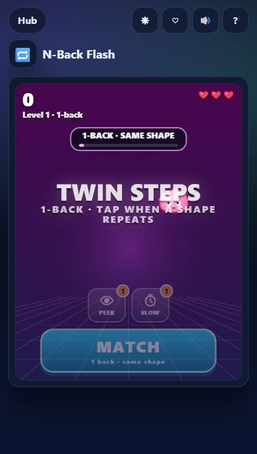
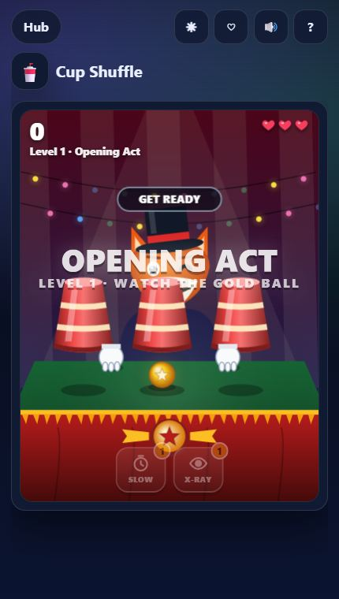
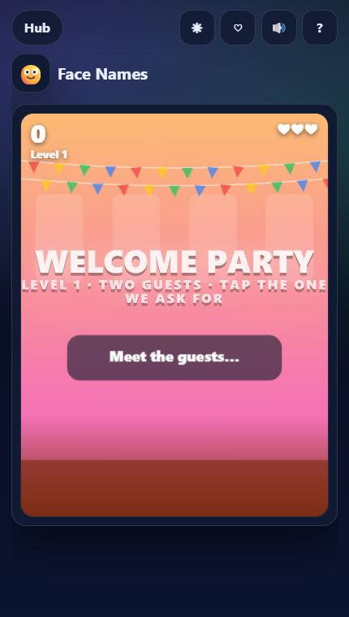
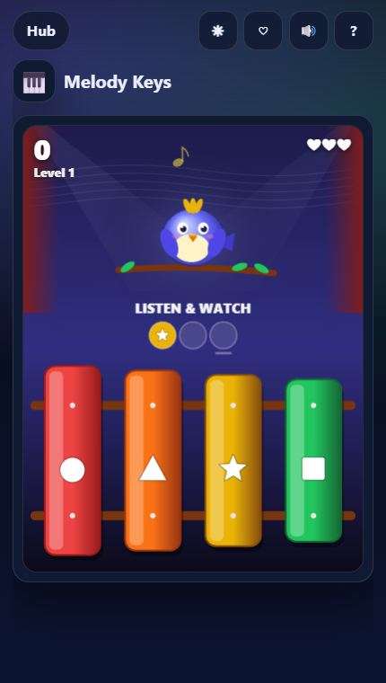

A quick note first: these are games, not medical tools. But memory tasks are a great warm-up for the brain — like stretching before a run — and they get noticeably easier with practice. Pick one or two and play them daily.
Working memory

N-Back Flash
Shapes flash one at a time; tap MATCH when the current one is the same as the one N steps back. The n-back task is a classic working-memory exercise from psychology research. Here it starts at 1-back and climbs to 2- and 3-back, then mixes shape and position.
Tip: say the last N items quietly in your head as a rolling list.

Grid Recall
Some tiles light up for a moment; tap every one you saw. The grid grows from 3×3 to 7×7, and later rounds add ordered tiles, red decoys and a rotating grid.
Tip: remember shapes, not tiles — "an L in the corner" is easier than five positions.
Visual attention

What Changed?
Study a cosy scene, wait for the blink, then tap what moved, vanished, appeared or changed colour.
Tip: scan in the same order every time — left to right, top to bottom.

Flash Count
Apples, stars, gems and critters flash on a table; count each kind before the curtain drops. Later levels add moving and overlapping objects.

Cup Shuffle
The carnival classic: follow the gold ball as cups shuffle faster, with multiple balls and fake grey ones later on. Keyboard players can answer with 1–6.
Everyday memory

Face Names
Guests introduce themselves one by one; then you find who was named, or pick their job or favourite colour. Look-alikes and returning guests keep it honest.
Tip: link each name to one feature — "Rosa, red scarf".

Recipe Rush
An order ticket flashes; build the dish with the ingredients in the same order. Watch for "NO" requests and double helpings.

Melody Keys
A songbird sings a short tune on coloured keys; play it back in order. Tunes grow longer and faster, and bonus levels ask you to play them backwards.
Tip: hum along — sound and colour together are easier to recall.
A 5-minute routine
- Minute 1–2: one round of N-Back Flash to wake up working memory.
- Minute 3–4: a visual game — What Changed? or Grid Recall.
- Minute 5: something playful like Melody Keys to finish on a high.
Your best scores and streaks are saved in the browser, so you can watch yourself improve week by week. Find the full list under the Memory filter in the Play Hub.